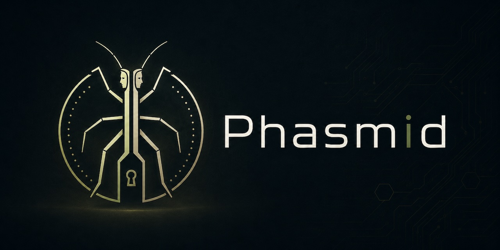
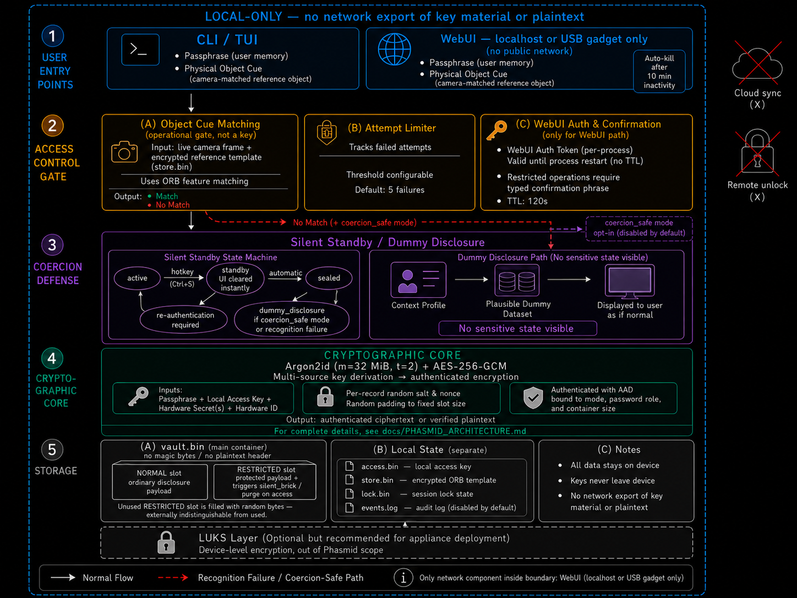

Local-only coercion-aware storage.
Phasmid is a field-evaluation research prototype for controlled disclosure experiments under practical risks such as device seizure, compelled access, and over-disclosure.

Designed for disclosure control, not casual file encryption.
Phasmid creates and operates encrypted local containers while keeping the operating boundary explicit. It is intended for security researchers, field-risk evaluators, and local-only disclosure-control experiments.
Encrypted local vessel
Stores payloads in a local container and uses authenticated encryption with password-derived keys.
Object-cue operation
Uses camera/object matching as an operational access cue, not as cryptographic key material.
Controlled disclosure
Supports workflows that separate visible disclosure from protected local state under documented assumptions.
Architecture boundary
The Janus Eidolon System is organized around a two-slot local storage model, local access-key mixing, explicit restricted-action policy checks, and capture-visible UI discipline.

Local-first security boundary
vault.bin alone is not intended to be sufficient for normal recovery when required local state is absent.
Capture-visible restraint
Normal UI and CLI flows avoid exposing internal disclosure structure, restricted recovery behavior, or trial order.
Best-effort metadata reduction
Metadata review and reduction are provided as operational support, not as guaranteed sanitization.
Explicit non-claims
Phasmid does not claim perfect deniability, forensic immunity, secure deletion on flash media, or protection from compromised hosts.
Controlled disclosure flow
The page intentionally presents the operating concept without exposing sensitive internal mechanics. Good public pages attract attention; reckless public pages attract incident reports. This chooses the former.
Prepare
Create a local vessel and define the operational context before field use.
Bind
Combine passphrase-derived recovery with local state and an object-cue operating gate.
Operate
Use CLI, TUI, or local WebUI while keeping normal capture-visible surfaces restrained.
Disclose
Support controlled disclosure behavior under documented assumptions and residual risks.
Operator-facing, field-aware, local-only.
A future screenshot or GIF can replace this mock console. Until then, the section gives visitors an immediate sense of the tool's operational posture without inventing unimplemented features.
What Phasmid protects is not only data. It protects decision space under pressure.
The system is framed around coercion-aware storage and delaying architecture: increasing uncertainty, reducing over-disclosure, and preserving local operator control within clear technical limits.
Quick start
Repository-local use is intentionally simple. The first run creates a virtual environment if needed, installs dependencies, and opens the TUI Operator Console.
git clone https://github.com/01rabbit/Phasmid.git
cd Phasmid
./phasmid